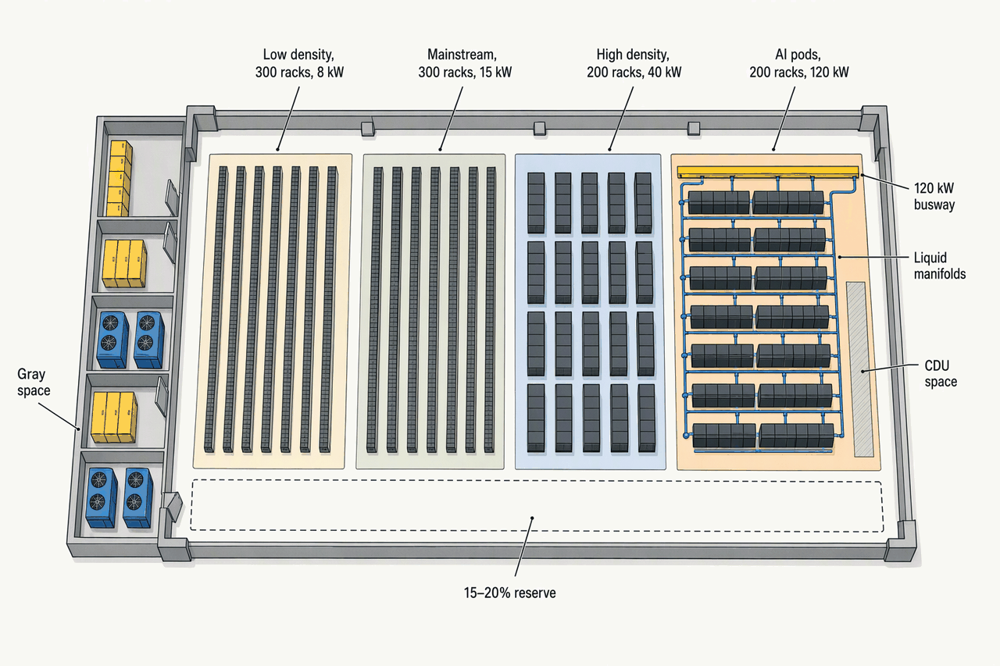
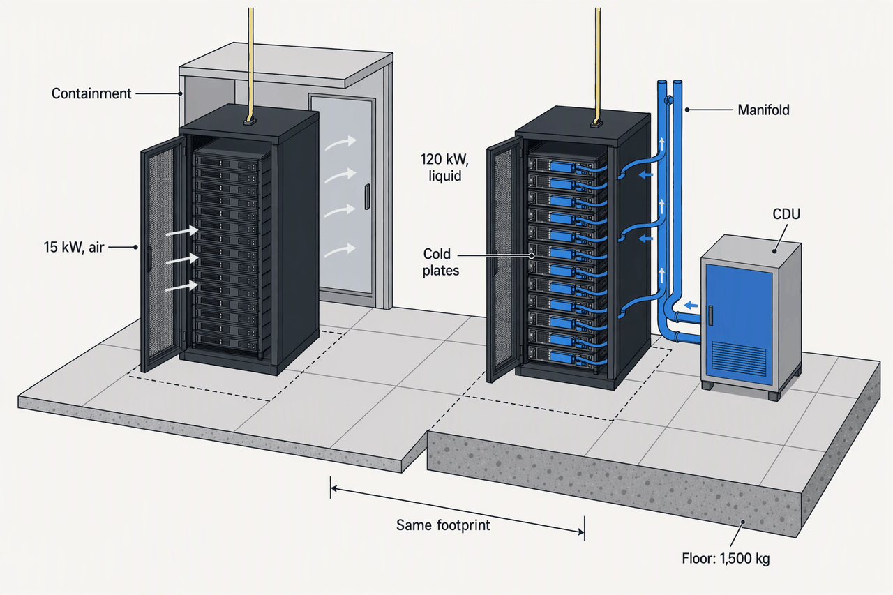
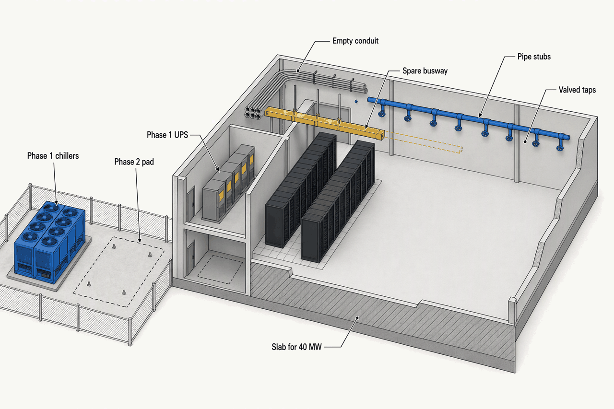
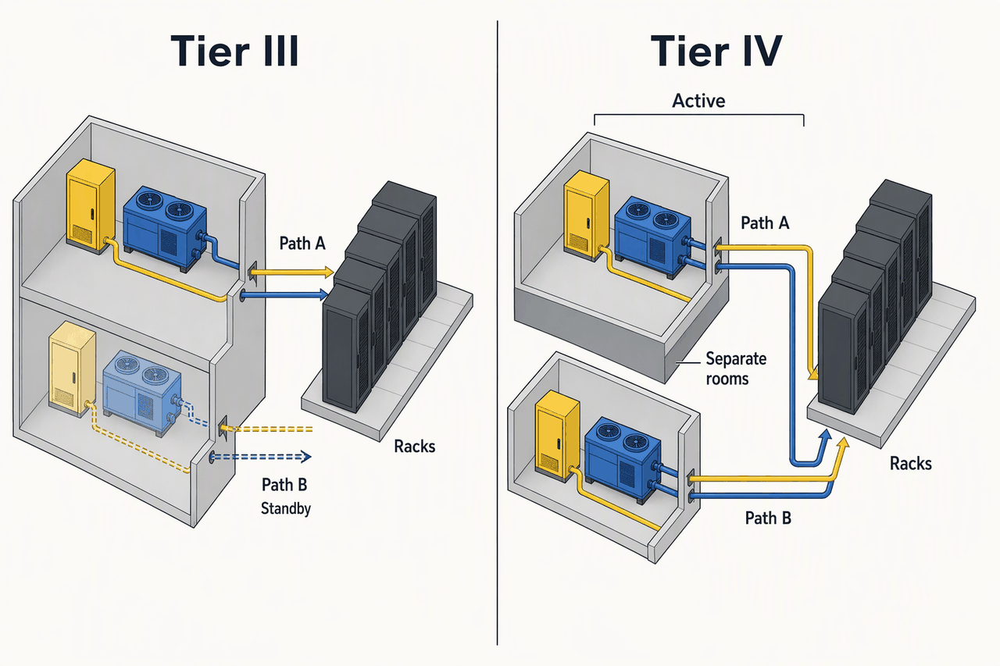

Design Requirements, Capacity and Load Planning
Deep detail and sources: the appendix for this topic. Short version: sixty words.
Topic 1 sat on the builder's side of the table; this chapter sits on the owner's. The job is to turn intent into a specification that can be tested at handover, and to choose the one number, kW per rack, that cascades into the power block, the cooling method, the floor and the cost of everything downstream.
- ~9 kWModal rack density of the installed base (Uptime, 2025)The average hall is nowhere near the headlines
- 16 → 27 kWAFCOM new-build average, 2025 to 2026The largest one-year jump in the survey's decade
- 1.6 h/yrTier III expected unplanned downtimeAn indicative design target, not an SLA
- +25–60%Capex for Tier IV over Tier IIIUnder 5% of certified facilities pay it
- 4–5%Average change-order cost, up to about 15% (AIA)Vague requirements are deferred change orders
- 10 kWContainment threshold in California Title 24Where the code starts to care about density
From intent to specification
- Owner's OPR
- measurable requirements
- Engineer's BOD
- topologies, calculations, code list
- Drawings, SD to CD
- a built facility
- Commissioning, tested against the OPR
Anything you want tested at handover must be a measurable sentence in the OPR. "Highly available" is untestable; "Tier III, PUE ≤ 1.4 at design load" is. Definitions per ASHRAE Guideline 0 and Standard 202: APX-requirements §1.
| Aspect | OPR | BOD |
|---|---|---|
| Who writes it | Owner, or the owner's engineer | Design team, or the design-builder's engineer of record |
| When it starts | Pre-design, before any drawing | Schematic design, refined through design development |
| What it holds | Mission, capacity, density, availability, efficiency, budget, certifications | Topologies, one-line, sizing arithmetic, code list, product selections |
| Contract status | Deliberately not a contract document; issued with the RFP | Design deliverable that feeds the drawings and specifications |
| Tested by | Commissioning, at handover | Verification against the OPR at each design gate |
| How it changes | Owner change control at phase gates | Redrafted as the design develops |
The OPR says what, and how success is judged; the BOD says how, and shows the arithmetic. Keeping the OPR out of the contract avoids conflicting language while it still governs acceptance. Both tables of contents: APX-requirements §1.
The two tables of contents
OPR, ten sections: project mission and business objectives; capacity and growth (day-one and ultimate IT load, phasing trigger, 15–20 year horizon); availability and resilience (tier, maximum tolerable downtime, redundancy stance); density profile (average, peak, high-density zones, liquid readiness); efficiency (design PUE, WUE stance, energy-code posture); environmental and design conditions; budget and schedule ($/MW envelope, phasing dates); certifications and compliance; operations and maintenance requirements; constraints and owner standards.
BOD, nine sections: design narrative and code list (with the AHJ); design conditions (outdoor dry- and wet-bulb, setpoints, seismic and wind); electrical topology (one-line, utility service, UPS, generators, ELC assumptions); mechanical topology (cooling method by zone, plant sizing, MLC assumptions); capacity and density basis (IT load, diversity, utilisation); space programme (white space, gray space, floor loading); sizing calculations; sustainability basis (PUE model, 90.4 compliance path); product selections.
When the documents evolve
- Pre-designOPR writtenMission, capacity, tier, density profile
- Schematic designBOD draftedCooling method by zone, electrical topology
- Design developmentBOD refined, OPR revisited at the gateEquipment classes and sizing
- Construction documentsCommissioning requirements folded inEverything on the drawings
- ConstructionChange orders cluster in the final halfNothing cheap
- OccupancyOPR is the acceptance yardstickWhether it passed
Lock the tier and the density profile before design starts; both are extremely expensive to change once drawn. A vague OPR does not bite early, when fixes are cheap, but in the final half of construction, when the owner has the fewest options. Phase vocabularies: APX-requirements §2; the change-order evidence: APX-requirements §3.
Two phase vocabularies, and the change-order data
- AIA phases run programming, schematic design (SD), design development (DD), construction documents (CD). ASHRAE Guideline 0 runs pre-design, design, construction, occupancy and operations. They align: the OPR is a pre-design, owner-owned document; the BOD begins at SD and is refined through DD, with commissioning requirements folded into the CD set.
- Best practice (USGBC LEED commissioning guidance) is to revisit both documents formally at each phase gate under change control, because the people who close out commissioning are rarely the people who set the requirements.
- AIA's dataset of 892,457 change orders on 18,229 completed projects (The Truth About Change Orders, 2023) puts the average cost impact at 4–5% of value, the middle-80% range up to about 15%, and 11.29 change orders per project above $50M, most in the final half. Independent academic work found 11–15% overruns on large buildings, with design changes and errors or omissions the dominant cause.
Who owns the gap
| Model | Design risk | A vague OPR becomes | Spec type | Owner's protection | Owner exposure |
|---|---|---|---|---|---|
| Design-bid-build | Owner, who warrants the drawings | Change orders the owner pays | Prescriptive drawings | Little; claims after the fact | most |
| Design-build | Builder, if scope was defined at signing | The cheapest compliant reading of the gap | Scope plus owner standards | Lump sum or GMP | moderate |
| EPC turnkey | Contractor | Nothing, if the spec was precise enough to guarantee | Performance spec: tier, PUE, MW, redundancy | Performance security 5–15%, liquidated damages | least |
Under design-bid-build the owner pays for its own vague words as change orders. Under EPC the contractor guarantees the outcome, but only against a specification precise enough to guarantee, so the owner who cannot write one is the least protected. Certification targets follow the same split: APX-requirements §3 and APX-requirements §11.
The density decision
- open air, no containment2–10 kW per rack
- hot or cold aisle containment10–30 kW per rack
- rear-door and in-row exchangers20–80 kW per rack
- direct-to-chip liquid, 200+50–200 kW per rack
- immersion100–250 kW per rack
- air gets difficult (Budlong)20 kW per rack
- air impractical, 40–50 kW45 kW per rack
- rear-door ceiling (Vertiv)80 kW per rack
- rear-door ceiling (JLL); immersion entry100 kW per rack
- GB200 NVL72, liquid only132 kW per rack
- GB300 NVL72142 kW per rack
- Vera Rubin, projected246 kW per rack
Design to ranges, not points. Sources agree air is right below about 20 kW and liquid at the chip is mandatory by 50–80 kW; the overlapping bands are the contested middle. GB200-class racks exist only liquid-cooled (APX-requirements §6).
- Low density2.4300 racks at 8 kW, air with containment
- Mainstream4.5300 racks at 15 kW, air with containment
- High density8200 racks at 40 kW, rear-door or in-row
- AI pods24200 racks at 120 kW, direct-to-chip liquid
The AI band, not the rack count, drives the megawatts: 20% of the racks carry 61% of the load, and the AI band expands to reach the 40 MW headline. Racks per MW run from 125 to about 8 across one building, the worked arithmetic in APX-requirements §12.
Where the number comes from, and what it sizes
- Uptime's 2025 survey measures the installed base: modal density almost 9 kW, and more than 80% of operators have no racks above the high-density thresholds. AFCOM and vendors weight new and AI deployments: 16 kW in 2025, 27 kW in 2026. Both are right about different populations; a new colo plans well above the installed-base average (APX-requirements §4).
- The profile is built rooms → pods → cabinets (Schneider White Paper 150), each pod rated for an average and a peak, and no cabinet may exceed the pod's peak because the distribution is not rated for it.
- Cascade rules of thumb: about 100 racks per MW at 10 kW, 50 at 20 kW, 10 at 100 kW; 15–25 ft² per air-cooled rack, 12–15 ft² liquid-cooled; $/kW of white space falls as density rises, then rises again when liquid cooling, floor loading and denser distribution add cost; liquid-cooled construction carries a 7–10% premium (APX-requirements §5).
- Colos design speculative flexibility because they cannot know their tenants' hardware; hyperscalers design to a known workload and are standardising AI racks through OCP (APX-requirements §7).
- The AI pods also carry racks the 1,000 count leaves out: copper reach in an AI fabric puts about one air-cooled 20–30 kW network rack beside every two GPU racks, roughly 100 across the campus (Topic 9).

High-density capability is confined to specific pods so it does not strand the general floor. The reserve strip is where the profile changes over fifteen years.

Eight times the power in the same square metre, with a different floor, pipe and power feed under it. The density number is a building decision.
Phasing and future-proofing
| Item | Built for 40 MW on day one | When | Why |
|---|---|---|---|
| Floor-loading headroom | ✓ | Day one | Structure is ruinous to add later |
| Floor-to-floor height | ✓ | Day one | Fixed by the shell |
| Pipe stubs and valved taps | ✓ | Day one | Cheap now, a shutdown later |
| Spare conduit and busway pathways | ✓ | Day one | Pathways, not the busway itself |
| Electrical room space | ✓ | Day one | Space is cheap; relocating gear is not |
| Transformers | ✗ | Per 10 MW phase | Capital-intensive, ordered to the interconnection date |
| Switchgear | ✗ | Per phase | Technology-dependent |
| UPS | ✗ | Per phase | Capital-intensive, comes in modular blocks |
| Chillers | ✗ | Per phase | Capital-intensive, technology moves |
| Generators | ✗ | Per phase | Capital-intensive |
Spend a little on passive future-proofing, meaning space, structure and stubs, and defer the plant. Shell and site are built for 40 MW and MEP for 10, because interconnection and leasing set the phase clock, not the concrete (APX-requirements §8).
Stranded capacity, the three loads, and what "AI-ready" must name
| Load | What it is | Why it matters |
|---|---|---|
| Nameplate | Sum of the equipment ratings | The largest number, and the wrong one to size to |
| Design | Diversified load the power block is sized to | Below nameplate, with contingency and headroom |
| Actual | Real operating draw | Smaller again; LBNL-parameter modelling clusters the facility coefficient near 0.66 |
- Applying server-level utilisation to facility capacity overstates facility load by 9–18 points against a facility-level estimate (2026 arXiv).
- Stranded capacity is capacity you paid for that a different resource blocks: power free but cooling maxed, floor free but the busway full, PDUs unbalanced across a row. Watch the resource that runs out first.
- Keep 15–20% of white and gray space in reserve for reconfiguration.
- "AI-ready" is a specification only when it names numbers: kW per rack of busway (50–120+), floor loading (racks near ~1,500 kg, 3,000+ lb), supply-water temperature, GPM per rack, CDU space. Otherwise it is marketing. Forward densities (Vera Rubin 246 kW, Deloitte about 370 kW) are projections (APX-requirements §7 and APX-requirements §8).

The empty pad is the cheapest thing the owner ever buys. Structure, height, stubs and pathways cost little now and are ruinous to add later; the plant that sits on the pad is deferred.
Availability as a criterion
- 1.6 h/yrTier III at 99.982%Concurrently maintainable; the colocation market standard
- 26 min/yrTier IV at 99.995%Fault tolerant; under 5% of certified facilities
- 28.8 h/yrTier I at 99.671%Single path, no redundancy
- +25–60%Capex for Tier IV over Tier IIIEvery path doubles into separate rooms
- $500K/hrDowntime cost at which Tier IV breaks evenBelow it, Tier III plus good operations wins
- 70–90%Of new-build cost to retrofit a hall to Tier IVChoose the tier before design, not after
Tier III buys concurrent maintainability; Tier IV buys surviving a fault automatically, and pays for it in duplicated rooms. Few certified facilities go that far, and hyperscalers handle faults in software across availability zones instead. Real uptime depends on operations as much as topology, which is why Uptime de-emphasises the percentages (APX-requirements §9).
| Framework | Levels | What it requires | What it certifies | Where it is used |
|---|---|---|---|---|
| Uptime Tier Standard: Topology | Tier I–IV | Redundancy topology as an outcome, not a prescription | Design (TCDD), constructed facility (TCCF), operations (TCOS) | Global; the marketing standard; most colo targets III |
| TIA-942-C, 2024 | Rated 1–4 | Full infrastructure including cabling | Third-party audit programme | Mainly North America |
| BICSI 002-2024 | Class F0–F4 | Design best practice across all disciplines, about 550 pages | Reference only; no plaque | International; the engineers' ceiling |
| EN 50600 / ISO/IEC 22237 | Availability Class 1–4 plus Protection Class 1–4 | Separate requirements for power, cooling and cabling | Design (DCDV, about 1 year) and facility (DCCC, 3 years) via TÜV, EPI, SGS | Europe and international |
All four encode redundancy topology, not a statistic, and "Tier III ≈ Class 3 ≈ Rated 3" is approximate. Ask for the constructed-facility certificate for the specific hall: many Tier III plaques are design-only or expired, a gaming problem Uptime itself documents (APX-requirements §9).

Concurrently maintainable: you can work on either path with the hall live. Fault tolerant: both paths carry load in separate rooms and nothing switches. The gap is 1.6 hours against 26 minutes a year.
Codes and certifications
A code binds where a jurisdiction adopts it; a standard binds only when a code adopts it by reference; a guideline binds only if the contract says so. The authority having jurisdiction picks the editions, so the BOD names the exact ones in force at the site (APX-requirements §10).
The binding code list and how each reaches a data center
| Code or standard | How it reaches the data center |
|---|---|
| NEC (NFPA 70), Article 645 | Optional: opt in by meeting every 645.4 condition (dedicated HVAC, room restricted to qualified staff, fire-rated separation, emergency power off); otherwise Chapters 1–4 apply. The 2026 NEC tightens 645 |
| NFPA 75 and 76 | Fire protection of IT and telecom rooms; best practice, cross-referenced from 645 |
| NFPA 855 | Lithium-ion energy storage; shapes UPS battery-room ratings and suppression |
| IBC and IFC | Building and fire basis in most US jurisdictions, with IMC and IPC |
| ASHRAE 90.4-2022 | Energy: annualised MLC and ELC checked against maxima; MLC maxima vary by climate zone, ELC do not; PUE defined but not used for compliance; applies above 20 W/ft² and 10 kW; adopted via IECC |
| ASCE 7, via IBC | Seismic and structural; carries the density plan's floor-loading demand |
Outside the US, IEC electrical standards and the EN 50600 / ISO/IEC 22237 family dominate, with national codes and, in the EU, Energy Efficiency Directive reporting on top.
| Framework | Entry control and cameras | Environmental monitoring | Logs and retention | Metering and efficiency | Who earns it after handover |
|---|---|---|---|---|---|
| SOC 2 | Continuously operating cameras, access controls | Temperature, humidity, leak detection, suppression, UPS | Proof the cameras ran through the period | ✗ | Operator, Type II over a period |
| ISO 27001, Annex A.7 | Secure perimeters, entry controls | Protection of supporting utilities | Control effectiveness, not paperwork | ✗ | Operator |
| PCI DSS Req 9 | Cameras or access control on sensitive areas; distinct visitor badges | ✗ | Footage and logs at least 90 days (verify) | ✗ | Operator, for the cardholder environment |
| FedRAMP / NIST 800-53 PE | Access authorisations, surveillance, intrusion detection | Environmental monitoring, strictest at High | Access logs reviewed on a schedule | ✗ | Operator, for the federal suite |
| LEED | ✗ | ✗ | Requires an OPR for its commissioning prerequisites | Whole-facility metering to Portfolio Manager (EAp3) | Design and build team, at certification |
| ENERGY STAR | ✗ | ✗ | 12 months of operating data | Score ≥ 75 on measured PUE | Operator, after a year of running |
Most of each framework is process the operator earns later. The concrete, steel and hardware, meaning mantraps, camera coverage of every entry, leak detection, fire-rated separations and submetering, must be in the OPR now or they arrive later as change orders (APX-requirements §11).
Which document does commissioning test the finished building against, who writes it, and why is it kept out of the contract?
The OPR, written by the owner or the owner's engineer in pre-design. It is issued with the RFP but kept out of the contract documents to avoid conflicting language, while still governing acceptance.
In the reference hall, what share of the racks are AI pods and what share of the IT load do they carry?
200 of 1,000 racks, 20%, carry 24 of 39 MW, about 61%. The AI band, not the rack count, drives the megawatts.
Below what density do sources agree air with containment is right, and by what density is liquid at the chip effectively mandatory?
Air with containment below about 20 kW per rack; direct-to-chip liquid by 50–80 kW, and GB200-class racks at about 132 kW exist only liquid-cooled. Between those points the sources disagree.
Tier III and Tier IV: expected unplanned downtime for each, and roughly how much more Tier IV costs to build?
About 1.6 hours a year for Tier III and about 26 minutes for Tier IV, as indicative design targets. Tier IV costs roughly 25–60% more for the same IT capacity.
Under design-bid-build, who pays when a vague OPR turns into change orders? Under EPC, what does the owner need to have written for the transfer to work?
The owner, because it holds the design contract and warrants the drawings. Under EPC the owner needs a performance specification precise enough to guarantee: tier, PUE, MW and redundancy, each with a measurable acceptance test.
Name two things the reference hall builds for 40 MW on day one and two it defers to later phases, and the rule behind the split.
Day one: floor-loading headroom, floor-to-floor height, pipe stubs, spare pathways. Deferred per 10 MW phase: transformers, switchgear, UPS, chillers, generators. The rule: passive future-proofing is cheap now and ruinous later; the plant is expensive and deferrable.